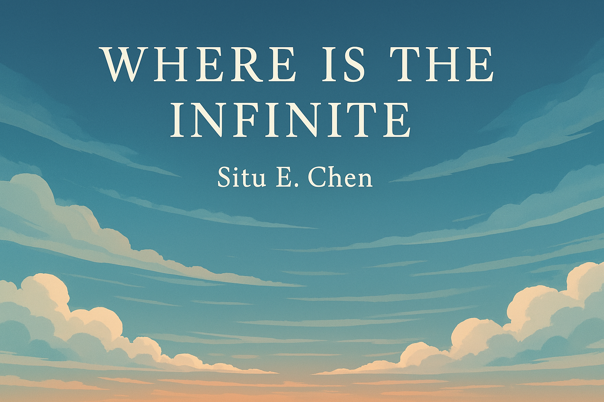

Where Is The Infinite

Skies
There
are
infinite skies.
When I slump in my car
after a bad day
at school
When I peer through the tinted windows
I see
a gray sky.
I see hundreds of puffy clouds
solid and
soft
scattered across
a forlorn canvas.
It makes me feel nice
and content
that the world is still meticulous.
When I go bike riding
on a hectic Sunday morning
When I gaze at the sky
I see something
enchanting.
Something that
sweeps my breath away
Makes my heart thump
with the joy of being alive.
I see a bright blue canvas
cloudlessly
stretching into a horizon
that never seems to end.
It makes me feel alive
and unstoppable
and untouchable.
When I stare out the window
on a meaningless Wednesday afternoon
When I let my eyes drift
I see a pale blue canvas,
maybe tinged with ivory
or smoke
or emerald.
I see willowy
feathery clouds
drifting across the sky lazily
as if God has just completed a meal.
I see them coveting the sky
like transparent curtains
like a soft breath fading
in winter air.
It makes me feel quiet
and lazy
and shy.
When I take a walk in the streets
during the evenings
When I look at that sky
I see millions of hues and colors. Ocean blue
and baby blue
and retriever yellow
and red pink
and cheese orange
and pale red
all mixed together
into the best gradient of the world,
they tint the clouds
making just a few streaks of rainbow appear
beyond the amber sun.
It makes me feel peaceful
and lonely
and alone.
When I shut the windows
on a bleak winter morning
When I catch an accidental glimpse
just a glimpse
of the sky outside
my heart skips a beat.
A gray blue canvas
ashy and stark and bleak
draped by thin, wispy clouds
sighs at me.
And next to the snowy sun
a faded moon resounds
like the heartbeat of a
dying man.
It makes me feel fascinated
and small
and hopeful.
When I open the door
on a rainy Thursday night
to put out the boxes
and water the flowers
I see darkness
and rain
and something unknown
and dangerous
and powerful
and scary
and roaring
and raging
and beautiful
and big
and infinite
It makes me feel dangerous
and braced
and unique.
There
Are
Infinite skies.
It's never been about the roses
or the willows
or the Pitbull around the corner that always steals my sausage
or the juicy orange glistening with dew
swinging on a branch outside my window
It's about the sky
and the air
and everything unknown
and unnoticed
and undisturbed
and untouchable,
and everything beyond them.
The beyond is infinite.
You want to know the proof?
The proof is in the skies.
← Back to Blog